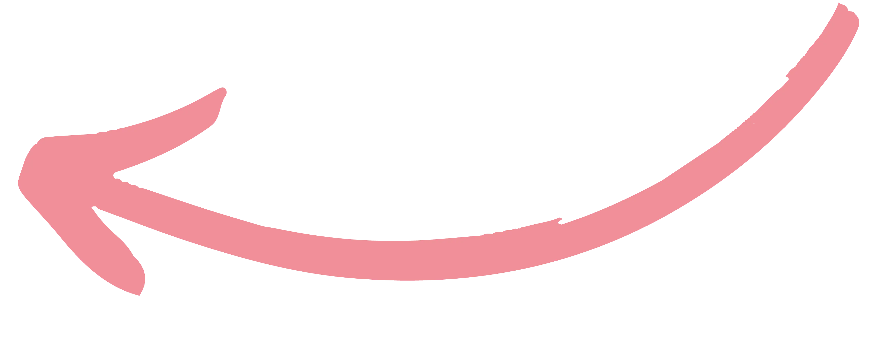

At dawn, as the city slowly wakes, Tana finds a newspaper in the street.
This seemingly innocuous event, however, sends her into a disturbing tailspin.
With a dull anxiety, she intuitively feels that the harmony reigning on the island might be just an illusion.
She must understand. She is not sure. She even doubts whether she truly wants to know…
Learn More
Harmony of Doubt's photos incoming, stay tuned !
Discover our
Artistic Portfolio
(in French)
Artistic Portfolio
(in French)
